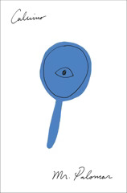

Mr. Palomar
Palomar
Back to fiction, and to what is really a collection of ... scenes, rather than stories, much less a novel. Mr. Palomar is very much a series of vignettes, of Mr. Palomar himself observing or perceiving or, most often, thinking. There's no plot, no character growth, but only a series of pictures of this one man's inner world and an exploration of how he takes in the world around him.
I found the exploration here somewhat depressing. Palomar is trying to connect to the world around him, but the endless rumination and second-guessing inevitably separate him from it. He's caught in a self-defeating loop, seen most obviously with the sunbather (who he drives away by trying to construct the perfect interaction with her bare chest) and by the gathered crowd watching him attempt to stargaze (where he's so caught up in switching between light and dark, map and sky, telescope and naked eye, that he can never actually see the night sky he meant to).
This is a tragedy, dressed in the clothes of a farce.